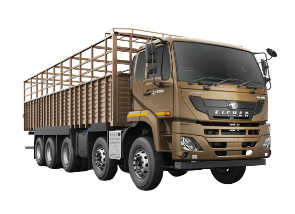

| Parameters | Eicher Pro 6048 | Remarks |
|---|---|---|
| Weight & Dimensions | ||
| GVW | 47.5 Ton | It is the 2nd highest possible GVW in rigid segment |
| Wheels | 16 | The configuration is achieved by adding a 4 wheel Pusher lift axle on a 12 wheeler |
| Payload | 34 Ton | 2nd highest possible Payload on a rigid truck |
| Wheelbase (mm) | 6800 | Good from stability point of view, but turning the wheels may be an issue |
| Load Span (Ft) | 29|31 | 29ft is good for Cement & Agri load etc. 31ft is good for Tanker & Coal |
| Overall length (mm) | 11235 | 11830 | - |
| Overall height (mm) | 2940 | - |
| Overall width (mm) | 2510 | - |
| Driveline | ||
| Engine | VEDX 8 | Powered by VOLVO group's engine with highest power & torque combination in this segment |
| Displacement | 7.7L | Bigger size engine for higher power and torque performance |
| Cylinders | 6 | 6 Cylinder is certainly good in terms of life for 48 Ton segment |
| Max. Power | 260HP@2200rpm | Acceleration & Speed is supposed to go up even with lesser pressing of accelerator |
| Max. Torque | 1000Nm@1000-1700rpm | Higher Torque to weight ratio ensures better pick up & outstanding gradeability. Downshifting frequency too would be low |
| Fuel injection system | DENSO | Certainly it's a reliable FIS, however BOSCH has got better after sales network |
| Fuel efficiency Switch | M Booster+ | Power, Eco & Eco+ mode button for different load & gradient scenario for higher KMPL |
| Gear shifting advisor | √ | Assist selection of right gear for higher KMPL as Power and Torque needs are changed |
| BS6 Norms | EGR + SCR (C-shaped) | With Mid NOx there will be lesser formation of NOx in engine thereby Adblue consumption will be low |
| Clutch | 430mm Organic | Power transmission and clutch life will improve, but cost of replacement will be higher |
| Gear Box | ET140S9 | Internationally reknowned brand with 1 crawler & 8 forward gears |
| CGR/FGR | 12.64 | 8.84 | Crawler gear will help if vehicle stuck due to heavy load on gradients |
| Rear Axle | Eicher 458DH | Inhouse rear axle for ease of spares availability & service |
| Rear Axle Ratio | 4.8 | Shallower RAR will help in faster movement on highways & also help in KMPL |
| Chassis/Aggregates | ||
| Auxillary Braking | Engine Exhaust Brake | It would have been better if Eicher had introduced Engine brake for such a heavy segment |
| Front Suspension | Parabolic Suspension | Better cabin comfort & longer leaf life |
| Rear Suspension | Slipper ended with semi elliptical leaf spring | Sleeper ended is very good for lower maintenance as it has only 2 greasing points |
| Chassis Frame(lXWXT in mm) | 300X76X7 | Higher chassis depth & width for better load carrying capacity |
| Fuel Tank Capacity | 350L Polymer tank | Lesser stoppage for fuel refilling. Strong and safe material |
| Adblue Tank Capacity | 50L | Need to refill Adblue at an interval of 5500 km (If KMPL is 3.3) |
| Tyre | Front - 295/90R20 Rear - 10R20 | The vehicle is entitled for full 47.5 Ton GVW but Max. Speed will be 70 Km/Hr |
| Performance | ||
| Torque at wheel | CGR- 27909Nm, FGR- 19519Nm | Decent Pulling ability and greadability in 48 ton segment |
| Gradability | Crawler- 22% | The vehicle is able to climb a height of 22 units from a distance of 100 units |
| Turning circle dia (M) | - | - |
| Cabin & features | ||
| Cowl/Cabin Option | Cabin only | No cowl option. Existing Eicher 6000 series sleeper cabin |
| Tiltable cabin | √ | Easy to accessibility & service of engine and allied components |
| Tilt & Telescopic steering | √ | Driving comfort |
| Adjustable driver seat | √ | Driving comfort |
| Ventilation | HVAC | Driving comfort |
| Advance instrument cluster | √ | Digital clock, fuel gauge, Critical lamp indications etc. |
| Cruise control | ×√ | Maintains Speed/rpm without pressing Accelerator pedals which leads to driving comfort |
| Proximity mirror | √ (Signa) | Better visibility of objects which are close to the vehicle in the front and the co-driver side |
| Footsteps | √ | Easy ingress and egress |
| USB Charging port | × | - |
| Telematics | √ | Standard fitment - Geo fensing, Tracking, Anti fuel theft + Other features |
| Hill Start Assist | × | - |
| Anti Fuel Theft | × | - |
| Reverse Parking Assist | × | - |
| LED Tail Lamp | × | - |
| Unitised Wheel Bearing | × | - |
| Warranty & ODI | ||
| Warranty | Driveline - 4Y/UL KM Vehicle - 2Y/UL KM | Kept similar as BS4 |
| Engine ODI | Every 60K Km | - |
| Gearbox ODI | Every 1.20L Km | - |
| Rear Axle ODI | Every 1.20L Km | - |
| Suitable applications | Cement, Bulker,Tanker, Steel, Industrial goods, Agri products, Construction aggregates, Coal, Lubs |
© 2020 LOGIQS CONSULTING.